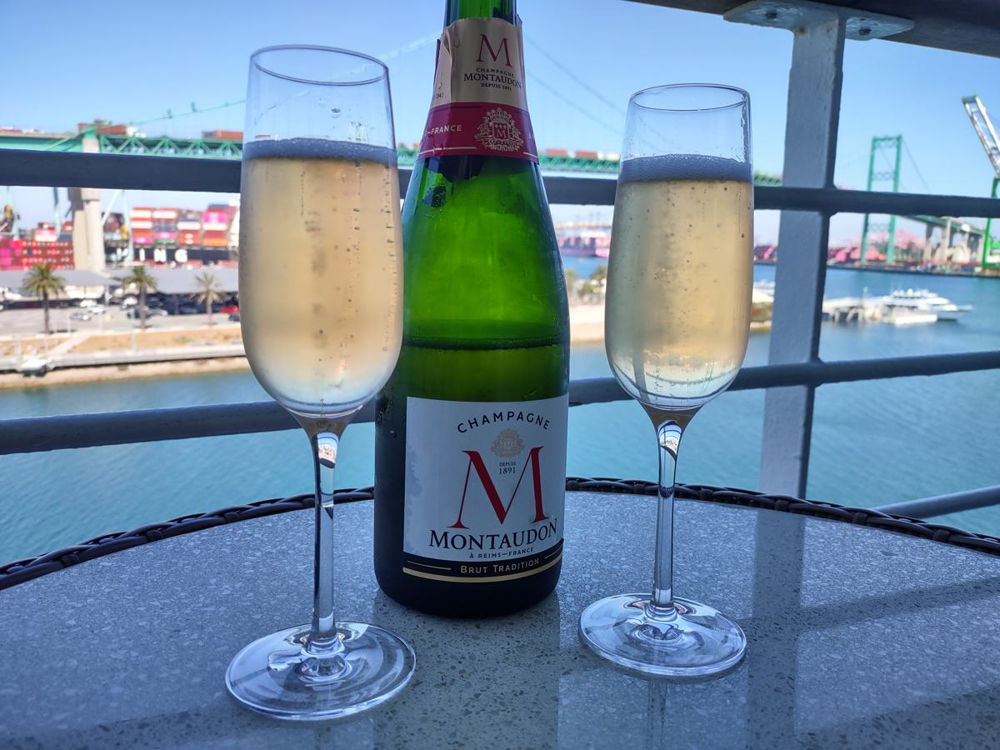
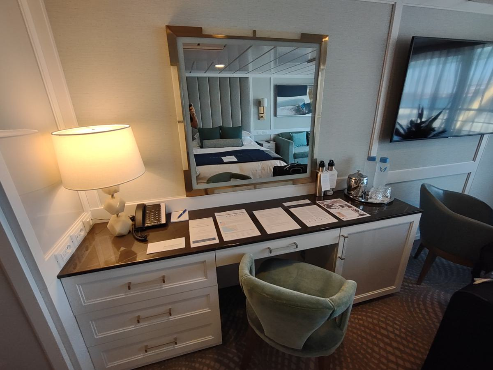
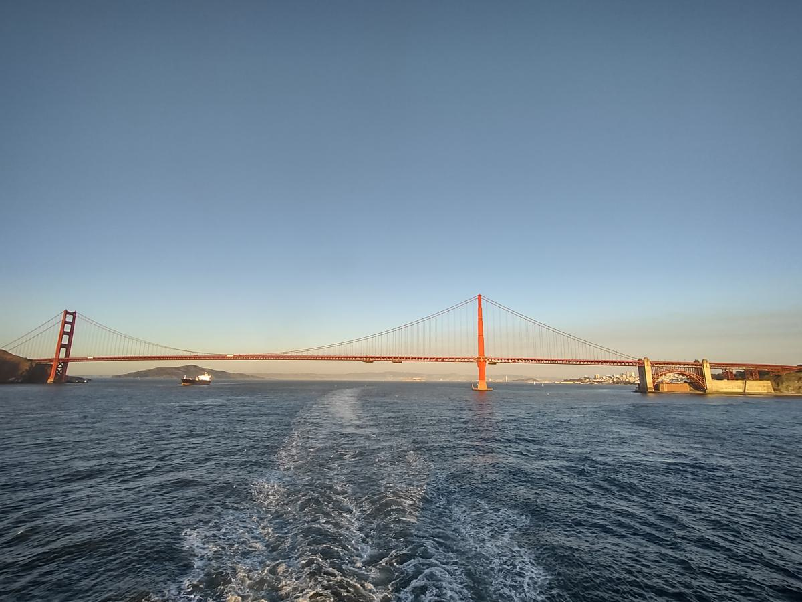
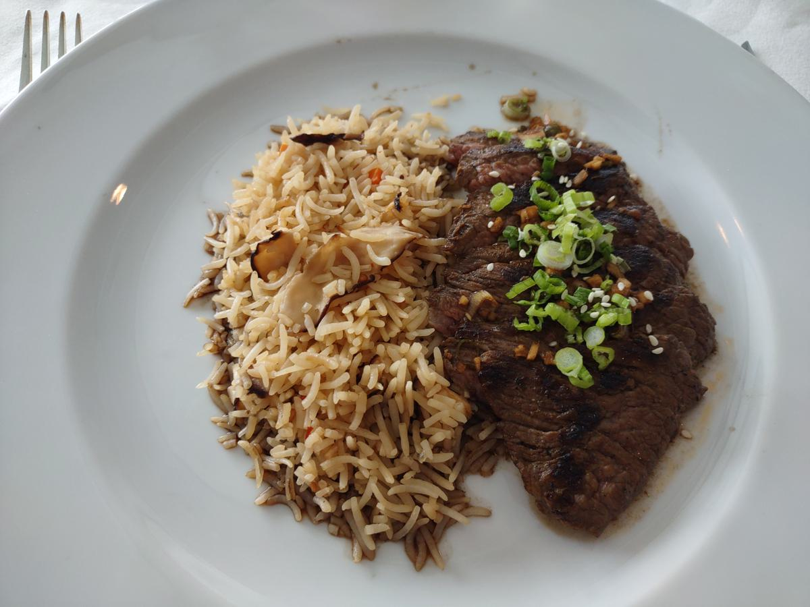
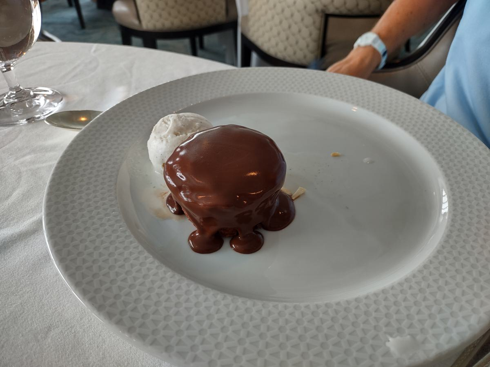

Embarkation, Thursday, September 26, 2024
It’s been three and a half weeks since we returned home from Mexico. Our tans have not yet had a chance to fade and here we go again. Today we are embarking on the Oceania Regatta for a seven day cruise with stops in Santa Barbara, San Francisco and Ensenada Mexico. We are back to our routine of going somewhere about every month.
It was a year ago when we cruised on the Regatta. The itinerary is similar; this time with a stop in Santa Barbara in place of Catalina Island. Oceania advertises itself as having the “Finest Cuisine at Sea”. We thought the food was good on Oceania, but not really the finest; food is very subjective. Holland and NCL have good food and Oceania was not head and shoulders above them. I suppose what makes Oceania unique is that there is no up-charge for any of the food items. For example, the coffee shop on the Regatta, called Baristas, which serves specialty coffees, teas, pastries and finger foods, are all included in the cruise fare. Oceania offers grilled Lobster tail, grilled Lamb chops and Gelato in the buffet with no additional charge. I think my trip reports will be primarily about food and the daily activities. As far as the food goes, on this cruise, I’m planning to try different menu items from those I had last time on the Regatta.
Since our last cruise on Oceania, there is a new program called, “Simply More”, where a shore excursion credit and wine and beer, served by the glass, during lunch and dinner are included in the cruise fare. There is no opting out, so we are being forced to take shore excursions and drink wine or beer. Such a hardship! I’m not complaining about the wine and beer, but the included shore excursions are not that great. More on that later in the week when we take the excursions that Becky and I selected.
This cruise is advertised as, “West Coast Vines - Round Trip Los Angeles”. The cruise line offers some wine related excursions in Santa Barbara and Ensenada. We scheduled an excursion in Ensenada to a winery that also includes lunch.

The luggage tags are nice and can be used for any trip. We received a sheet of printed inserts for the luggage tags with our names and cabin number.
As soon as the specialty restaurant reservation window opened, about three months prior to sailing, Becky booked dining at the steak house and Italian restaurant. We wanted early seating and a two top table. We have no interest in sharing a table with strangers. The upper categories of cabins have early booking for restaurant reservations, so we were able to secure the times we wanted. Cabins below the concierge category are the last group to book (about 70% of the ship). Those passengers will be sharing tables and have late dining times. The specialty restaurants are simply too small to accommodate everyone’s preferences.
This is our second Oceania cruise, and as repeat Oceania cruisers, we can attend the captain’s party, a second chance to order free drinks. The beverage package is an additional $50 per person per day and includes most alcoholic beverages, which we did not purchase. We can bring our own wine and spirits on board for consumption in our room, and mixers are free and delivered by the butler, so drinking in the bar is not what we plan to do on this cruise. We have $100 of ship credit, so we might order a few drinks during happy hour. I’m bringing a Nalgene bottle with a 1:1 mix of vodka and gin to make gin and tonics. I like to dilute my gin with some vodka. Becky brings Crown Royal to mix with Sprite along with a bottle of Pinot Grigio. We received a bottle of champagne and a bottle of red wine to enjoy in our room, a bowl of fruit and a vase of fresh flowers.
This morning I woke at 6am, made a cup of coffee and started the final packing. Most of my things were already in the suitcase, all that remained were last minute items. Breakfast was a fried egg and half of a chicken sausage. Becky made herself a fried egg sandwich.
The drive to the cruise port in San Pedro is 81 miles from Ventura and took about two hours. We ran into lots of typical weekday morning traffic and there was one crash that caused a 15 minute delay. As we passed the crash, there were about ten cars pulled off to the side of the freeway. Only one of the cars was badly damaged. We arrived at the cruise terminal around 1045am. The company that runs the parking lot has installed new gates at the entrance and it took me a minute to figure out how to work them. Now you have to tap your credit card before you can pull a ticket. The parking lot was surprisingly empty and we drove around a bit to find a good parking spot near the luggage drop off. The Crown Princess was also in port.
After dropping off our one checked bag we had to wait about 2 minutes before the attendants started calling for cabins. They called for owners’ suites first, but no one got up, so a minute later the PH category was called and about 20 people got up to get in line for the check in counter. Oceania runs their checkin different than the other cruise lines, there is no unnecessary standing in lines. A few minutes later we had our key cards and were on the ship. The first thing we had to do was check in at our muster station to get our key cards scanned. Then we went to find lunch.

Embarkation, part 2
At the check-in counter we were told that our cabins would be ready at 1pm. We knew from last time that we would not be able to drop off our carry-on bags at our cabin. We decided to have lunch at Waves Grill which is adjacent to the pool and we were seated by 1120 am. The Grill opened at 1130am, so we only had a few minutes to wait. Becky ordered a shrimp roll, a glass of chardonnay and for dessert she got some cookies from the buffet. I ordered a fish burrito, beer and later I had a milkshake.
Shortly after lunch our cabin was ready and our checked bag was waiting outside our cabin door. Our butler stopped by to greet us and give us instructions about ordering room service, restocking the mini fridge etc. His name is Covin and he is from India. We told him that we would like cans of Tonic water and Sprite. Later he stopped by again and delivered about four cans of Tonic water and Sprite and took away the cans of Coke and diet Coke. He also dropped off a bottle of red wine from our travel agent.

Embarkation, part 3
We did not have any reservations for dinner, so we tried to secure a walk-in spot at one of the specialty restaurants. Becky had read that this is sometimes possible on the first day. The Italian restaurant Toscana had an opening and we got a two topper by the window.
First course: both were good. Becky ordered her shrimp scampi without the pepper flakes.
Second course: Becky only wanted the tagliolini carbonara. The other pastas were good. I don’t remember the name of Chef’s Pasta Special, but it was spicy with a hint of bacon.
Main course: Both were good, but Becky only ate half of the lobster, so I gave her some of the dover sole and I ate the rest of her lobster. The dover sole was really good and the sauce was nice.

Dessert: Becky liked her chestnut cream cappuccino. I only ate about half of the apricot tart, just too many apricots for my tastes.
Santa Barbara, Friday, September 27, 2024
This morning when we woke, the Regatta was stationed about one mile off shore from the city of Santa Barbara. Kind of weird that our first port is only about 30 miles from home. The weather today was overcast most of the day with a high around 70F and light winds. After my morning shower, I took my laptop to Horizon lounge to do some work and drink coffee. About an hour later I joined Becky for another coffee and breakfast.
For breakfast, I had the special of the day which was huevos rancheros. Becky had an omelet with two lamb chops. After breakfast we tried our skills at the golf putting challenge and the bean bag toss. Then we took the tender to town.
I can’t remember the last time that we went to Santa Barbara, maybe 15 years ago. We drive through on the freeway about twice a year. The tender to the marina took about 15 minutes to go from ship to shore in one of the ship’s lifeboats. We had planned to visit a brewery and I looked up the opening times before we left. When we got there it was closed and didn’t look like it would open before noon. So we walked along State Street a bit to REI and went in to have a look at the clothes and camping equipment. Back onboard we went to the spa to soak in the big hot tub. Today we skipped lunch.
Canapes are delivered almost every day. We can choose from a variety of options, which we select on a small order sheet that we place on our door in the morning.
Dinner tonight was at a specialty restaurant called Polo Grill, which is a steakhouse.


We ordered various side dishes: Lobster Mac & Cheese, Potatoes Au Gratin, Crispy Onion Rings and Haricots Verts Amandine (green beans)
I chose the Crème Brûlée for dessert. This was OK, not the best I’ve had, I would order it again. None of the other selections sounded good. My second choice would have been ice cream.

Sea day, Saturday, September 28, 2024
Today is a sea day, en route to San Francisco. The weather was cloudy all day long and a cool 57F. The routine today was typical: wake, coffee, breakfast, golf putting and bean bag toss, lunch, future cruise presentation, afternoon golf and shuffleboard, afternoon tea, canapes, dinner and the show. Most of the passengers are 60 years of age or older with the average being 75, according to my estimation.
Photos of our cabin, this is a PH category.

San Francisco, Sunday, September 29, 2024
At 630am I went up to the Horizon Lounge to have my usual morning coffee and about 50 people were there waiting for the ship to sail under the Golden Gate Bridge. As we sailed under the bridge, it was too dark to take pictures.
We had breakfast in the Grand Dining Room. Becky had an omelet and steak. She gave me half of the steak. The steak was not that tender, but had a nice flavor. Becky thought she needed extra calories for our walk today. I ordered scrambled eggs, hash browns and Canadian bacon. After breakfast we played golf.
Around 10am we left the ship for our walk in the city. The plan for the day was to visit the San Francisco Maritime National Historical Park. The walk was about 1 mile in each direction. The theme for the park is maritime history. The Park includes several historic ships, only the Balcultha was open for self guided tours. Balclutha was a cargo ship, one of thousands of iron and steel sailing vessels built in Great Britain and Europe beginning in the 1860s. During thirteen years under the British flag, Balclutha called at San Francisco five times, bringing coal and general cargo from Europe and returning with California grain. From 1903 to 1930 the ship made yearly voyages between San Francisco and Alaska. Renamed Star of Alaska, she sailed for the Alaska Packers Association, carrying men and supplies to the canneries and bringing back packed salmon.
We were back onboard in time for lunch. Only the buffet and Waves Grill were open and we decided to eat at Waves Grill, where we could sit down and order off the menu. I had a beer and the Cuban Sandwich and Becky had the Ribs, which was only one rib.
In the afternoon, I worked on the Art Scavenger Hunt. We have met several people who are also looking for art and we compare and share answers. This is a good way to meet people. While wandering around the ship, I noticed that about ten tables in the main dining room were set up for a birthday dinner. Becky has read many of the posts on Cruise Critic made by the birthday girl. She is very well connected in the travel industry and we figured she was a travel agent. We didn’t know what birthday she was celebrating, but she did say online that it was a special birthday. From the table decorations we learned that she is 90 years old. We saw her around the ship and we were guessing her age was 70.
Today’s afternoon tea setup.
Tonight’s dinner was in the Grand Dining Room. Becky had Shrimp Scampi, which she liked. I had Beef Wellington, which was good. I ordered it medium well, since last year when I ordered it medium, it was too rare. I think what the kitchen does is cook a slice a bit more to order from the bottom side. When I turned the meat over, the bottom side was brown, so overall it was cooked as ordered.
San Francisco, Monday, September 30, 2024
The weather in San Francisco today was mostly sunny and warm. After morning coffee and breakfast we played golf and bean bag toss for points. We don’t know how many points we need to collect for Becky to get a jacket. The cruise staff will publish the redemption values for the prizes tomorrow. The amount of points needed for each item varies by the length of the cruise.
Our shore excursion started at 1pm and lasted until 5pm. The tour was called “Views Of San Francisco” and included three stops and a narrated drive through the city.
The tour was OK, not something we would have normally signed up for. The cruise fare included a $300 per person shore excursion credit, which we paid for since in the past we could opt out and the fare would be reduced by $300 per person. Today’s tour was $99 per person. I think we could have taken an Uber to the locations, then we would have been on our own schedule. We would have preferred to spend more time at Sutro Baths and less time at Gold Gate Park. Most tour stops were about 30 minutes. The narration given by the tour guide was good.

We ordered dinner from Polo Grill to be served in our cabin, which was served course by course. I had a crab cake and a pork chop and Becky had shrimp and more shrimp. Dessert was key Lime Pie.
Sea Day, en route to Ensenada, Mexico, Tuesday, October 1, 2024
Today was a sea day en route to Ensenada. The weather was overcast and 70F.
The routine this morning was typical: shower, coffee, breakfast, golf putting and bean bag toss. At 11:30am the answers for the Art Scavenger Hunt were revealed and we got a perfect score, earning us 20 points each. In the afternoon, we redeemed our points for various gifts. Becky wanted to get a jacket, but they didn’t have her size and the next size up was too big. Her second choice was a shirt, hat and socks. One of the other passengers gave her about 25 points, so we will take the point cards home and use them on our next Oceania cruise in November of 2025.
We ordered some drinks from the bar to take back to our room to have with our canapes
In the evening we attended a party for passengers who have more than one cruise with Oceania.
Dinner tonight was in the main dining room.


Ensenada, Mexico, Wednesday, October 2, 2024
The weather in the was overcast with a marine layer that was expected to burn off mid morning, and the high temperature was 80F with an 8 mph wind. We had breakfast in the main dining room.
Our tour group met on the pier at 10am for a tour called “VIP Wine Tasting With Gourmet Lunch”. The cost of the tour was $179 per person. Not a tour we would have chosen, but we needed to use up as much of the $300 per person non-refundable shore credit as possible without going over by too much. So in the end, we went under by $44. Being forced to take tours has not been popular with the Oceania customers, and as of October 1st, they have dropped this “benefit” along with the wine and beer by the glass at lunch and dinner. Now the complaints online are about the cruise line dropping the benefits and raising the prices. For our next cruise on Oceania, scheduled for November 2025, will be grandfathered under the old program and get the shore excursion credit and wine and beer at lunch and dinner.
The bus ride out to the winery took 45 minutes and the tour guide provided some narration to kill the time. When we got off the bus, it was hot. Down in the cellar it was much cooler. We were given two small samples of wine to taste. The first one was a rose and the second was a red blend. I thought both were OK, but the samples were too small. Next we went upstairs to a large covered patio with nice views of the vineyards. Since the patio was open air, it was hot and any breezes that did come by no matter how small were most welcomed but insufficient to cool us off.
The lunch was served in three courses, with the first being raw tuna on vegetables, jalapeños and diced garlic. There was some green sauce made from tomatillos. It took a while to get served our first wine, by which time we had finished the first course. I was expecting some explanation about the paring of the food with the wine, which was the same rose we sampled before. The amount poured was pitiful and after our food was long finished. Becky didn’t like her food, so I ate it. Only later, when we were back on the bus did we learn that the fish was tuna. The second course was some small lettuce leaves piled on some beef, which was good, but the wine didn’t come out until much later. And by much later, I mean like 20 minutes later. The waiters skipped our table and after seeing them on their phones back by the bar, I walked over to our tour guide and asked him to get our table served. A third small sample of wine was poured, a Shiraz, and not connected to any food. Dessert was a scoop of vanilla ice cream on a cookie, served in a glass cup. Over the top was poured some coffee with Kahlua and Baileys. The dessert reminded me of an affogato. Back on the bus, the tour guide asked the group if they liked the wines and food. He got silence from the group.
We sat at a table for four with a father and son from Los Angeles and we had fun talking to them. The dad was not shy about expressing his disappointment with the wine and service. As we were boarding the bus I told the tour guide in private that I had some constructive feedback for him. He thanked me and said that on the bus we would be filling out a comment sheet. When the shore excursion desk opened later in the afternoon, I went to offer my feedback. That evening I received a letter from the shore excursion desk saying that they would look into the matter. Since it was the last day of the cruise, there was not much that could be done.
We were back on the ship by 2pm and we went to the spa to sit in the hot tub. We didn’t stay too long. At 4pm we attended tea for the last time.
We went to Martini’s bar for happy hour (two for one, $14). We need to spend the last of our onboard credit. We had a conversation with a couple from Maui and later we had dinner with them in the main dining room.
Back at the room, we finished packing and set out our large suitcase. By 10pm most of the suitcases had been picked up so I had to take mine down the hallway to where the luggage was being collected.
San Pedro, Thursday, October 3, 2024
Up an hour earlier than normal. We ordered room service for breakfast.
Around 730am an announcement was made for passengers who would self carry off all their luggage to disembark. We left our room at 745am knowing that they would soon be calling for the next group to disembark. By 810am we were in our car and paying the parking fee, which was $120. We encountered some stop and go traffic and we made good progress in the carpool lane. By 955am we were home.
Our next trip in November is another cruise, this time on NCL Bliss.